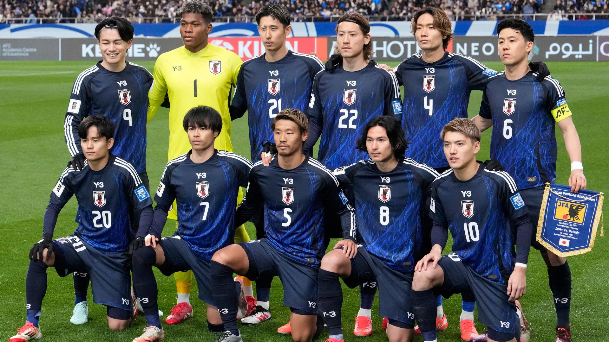
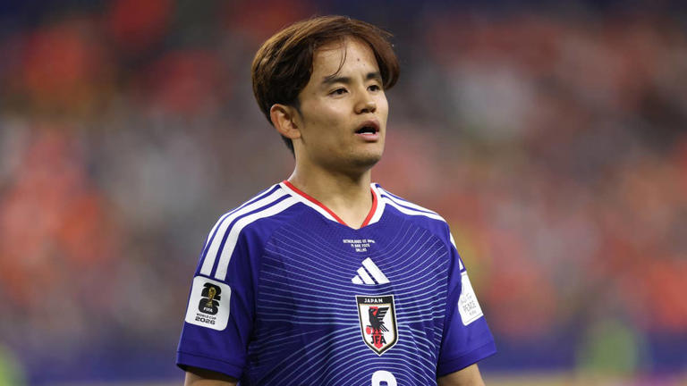
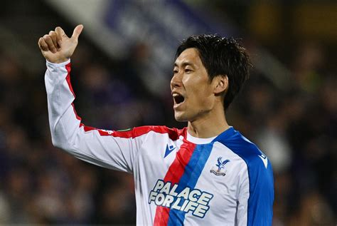
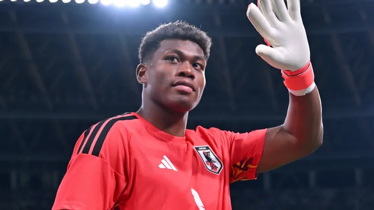

Meet the Samurai Blue
The Japanese national team enters the 2026 FIFA World Cup with a blend of experience and rising talent.
Featured Players

Takefusa Kubo
Midfielder
Real Sociedad (Spain)

Daichi Kamada
Midfielder
Crystal Palace (England)

Zion Suzuki
Goalkeeper
Parma (Italy)
Goalkeepers
Zion Suzuki
Keisuke Osako
Tomoki Hayakawa
Defenders
Yuto Nagatomo
Shogo Taniguchi
Ko Itakura
Takehiro Tomiyasu
Tsuyoshi Watanabe
Hiroki Ito
Ayumu Seko
Yukinari Sugawara
Junnosuke Suzuki
Midfielders
Wataru Endo
Junya Ito
Ritsu Doan
Daichi Kamada
Ao Tanaka
Takefusa Kubo
Keito Nakamura
Kaishu Sano
Yuito Suzuki
Forwards
Ayase Ueda
Daizen Maeda
Koki Ogawa
Keisuke Goto
Kento Shiogai
| FIFA Ranking | 17 |
|---|---|
| World Cup Appearances | 8 |
| Average Age | 27 |
| Confederation | AFC |
| Captain | Ko Itakura |